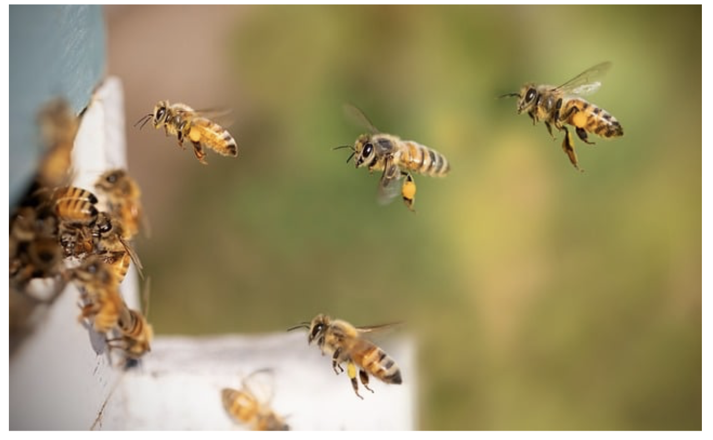
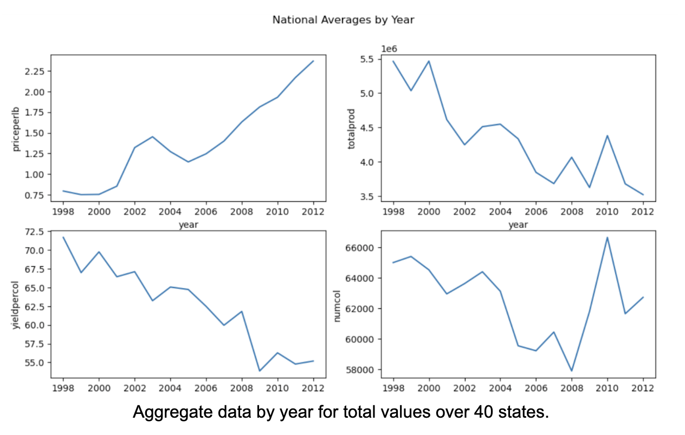
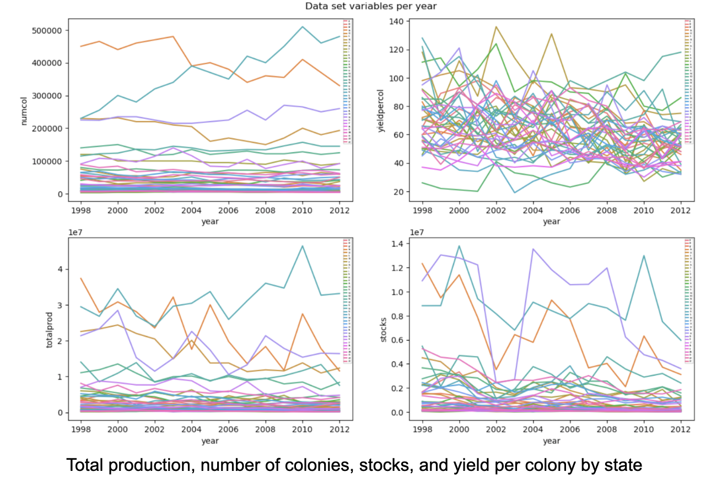
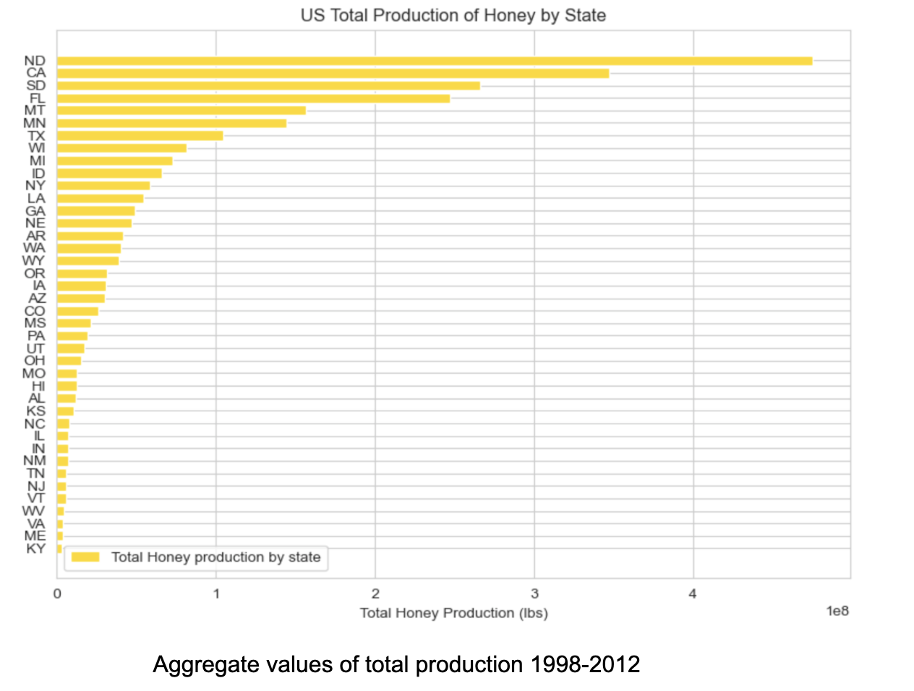
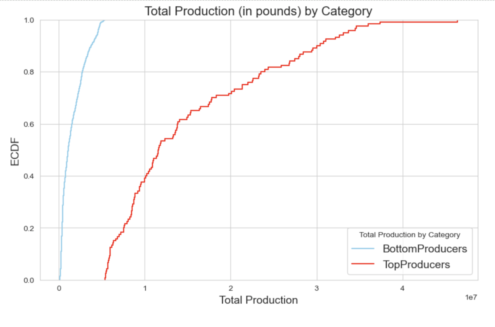
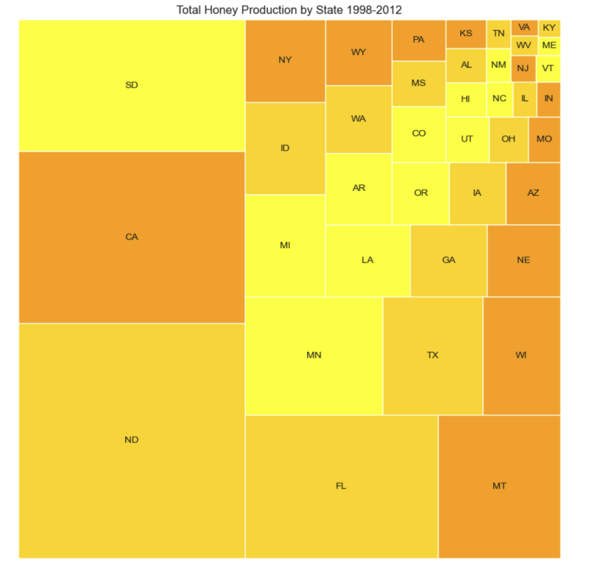
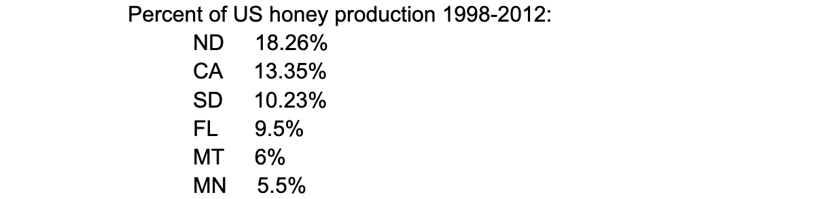
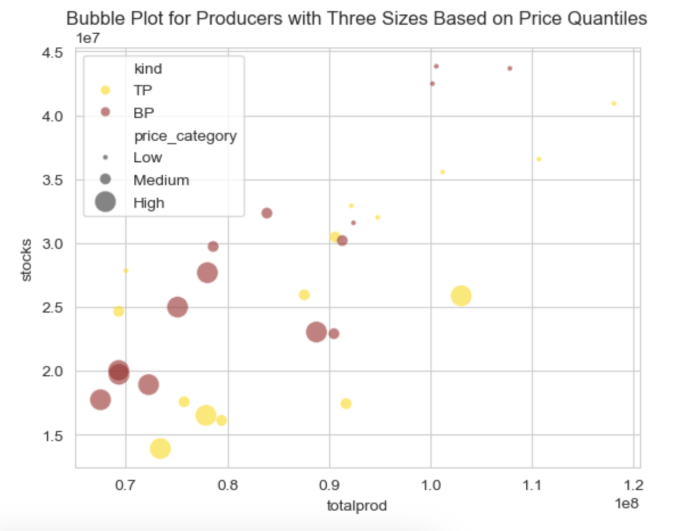
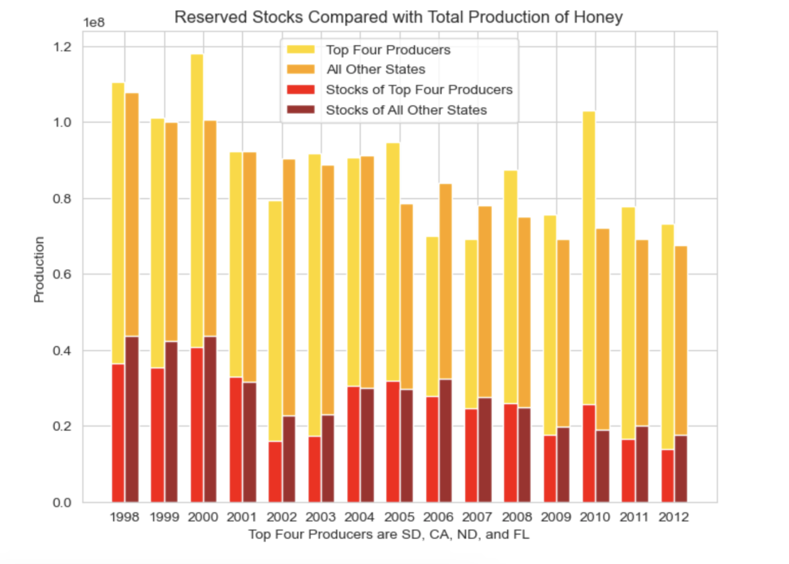

US Honey Consumption With Python (1998-2012)
by Margaret Bowers
Featured image by terski via Pixabay.
Introduction
One of the things I like most about living in Eastern Washington is gardening. While I enjoy growing produce and flowers for myself, I also think about what will attract bees. They serve a vital function for gardeners as pollinators. Also seeing swarms of bees on a hot summer day and listening to their rich hum is a joyful experience.
This is probably why I gravitated towards a Kaggle data set on Honey Production in the US for my first data science project. I was curious to learn which states produce the most honey and what those levels of production look like. I also wanted to find out which states might be a good choice for setting up a commercial honey production business and what factors a honey producer should consider.
Data
The data I used for this project is from the Kaggle dataset: Honey Production in the USA (1998-2012).
As noted in the data card, the primary source for this data is the USDA’s National Agricultural Statistics Service (NASS). NASS collects data from a wide range of agricultural sectors and provides statistics for agricultural workers and people who depend on agriculture for their livelihoods. Honey production is just one subset of the data they collect.
The data consists of numerical values for number of colonies, yield per colony, stocks, and average price ,as well as categorical fields for the state and the year data was collected. There were also two derived variables: total production (the product of number of colonies and yield per colony) and value of production (the product of average price and total production).
I understand intuitively what each of these fields represented, except for stocks. I know that stocks are honey reserves held back by producers, as defined in the data set, but I did not really understand what role they played in honey production. A major honey producer in my home state of Washington explained to me that reserves of honey are held back for two reasons: either wholesalers have too much stock and are not buying, or prices are too low and they hope to sell their honey for more the following year. It’s possible to do that with honey because – unlike standard produce – it does not spoil. Honey has even been found in ancient Egyptian pyramids with no evidence of microbial decay.
Analysis
With a better handle on the data, I did some preliminary EDA. While the dataset had no null values, upon closer inspection there were some states missing entirely. Six states do not appear in the dataset: AK, CT, DE, MA, NH, and RI. After some digging around, I discovered that this is not unusual. The USDA aggregates data by state to ensure data from individual farming operations are not disclosed. Some states are left out for privacy reasons.
There were also 4 states with incomplete data, where not every year was represented in the dataset. South Carolina only had reports for 3 years of the 15 year dataset, while Maryland and Oklahoma had 6. Nevada had 11 years of data. I decided to exclude these four states, leaving 40 of 50 states to provide a snapshot of US honey consumption.
National Trends
Looking first at how the fields trended nationally, I observed an overall decline in total production, yield per colony, and number of colonies with prices generally increasing over time.

The data shows that the number of colonies rather than the yield per colony, is the driver of production. It is interesting to see the big uptick in colony numbers starting in 2008, which corresponds with declining yield. Colony Collapse Disorder was first officially reported in 2006. I wonder if beekeepers started bulking up their colony numbers to try and mitigate ailing colonies.
Next, I looked at individual states. My research outside of the dataset verified that yield per colony can be wildly variable, which is apparent in the line plots below.

A typical beehive in the US can generate between 10 and 200 pounds of honey per year. That’s quite a range!
What was most interesting to me, when looking at state’s variables, was how most states cluster together with a handful of states clearly outperforming all the rest. Visualizing the total production by state makes it clear that a few states dominate honey production.

North Dakota is clearly the largest producer of honey. The states with the lowest levels of production were Maine, Kentucky and Virginia. These states also had some of the highest honey prices. Virginia has the highest average price of honey, followed by Illinois and Kentucky. Louisiana, Mississippi, and Arkansas have the lowest average prices of honey.
When I grouped the top 8 producers together and looked at how their production levels compared to all the others, I could really see how they dominated production for this time period.

The bottom producers have more uniform levels of production while there appears to be a lot of variability in production from the top producers. The bottom producers (blue line) were responsible for a little over 5 million pounds of honey over the 15 years in which data was collected. The majority (80%) of the top producers (red line) produced between 5 and 30 million pounds of honey while the top 20% of that group produced more than 30 million pounds of honey. Comparing production levels another way reveals that a few states may be responsible for most of the honey produced.

In fact, 4 states were responsible for just over half the honey produced in the US:

I included percentages for Montana and Minnesota here to show why I did not group them with top producers. While their contributions appear substantial in the tree map, percentages are more similar to the rest of the states’ production levels.
At this point in my analysis I grouped these top 4 producers into ‘top producers’ and all the rest into ‘bottom producers’. Looking at price quantiles for top and bottom producers, I examined their stocks, production, and prices.

It is interesting to note that even though top producers are responsible for more total production, bottom producers are actually holding back more stocks. These bottom producers generally have more expensive honey and withhold more inventory. The top 4 states, with some of the cheapest prices, are moving more honey through the market.

Conclusions
From 1998-2012, North Dakota, California, South Dakota, and Florida were responsible for just over half the honey produced in the United States. These states offer some of the cheapest honey. That means that it may be challenging to turn a profit when setting up a honey production business in these states where profit margins would have to be lower to accommodate some of the lowest prices of honey in the industry. If your goal is to sell your honey for higher prices, you may want to aim for Virginia, Illinois, and Kentucky. Of course, there are other factors contributing to the prices in different states, including the anticipated yield for the area, the cost of production and the quality of the honey. All would need to be taken into consideration when selecting the location of the business.
Further Research
What about North Dakota and South Dakota make them such great states for honey production? I remember driving through North Dakota many years ago and was charmed by all the sunflowers. Yellow sunflower disks followed the arc of the sun as far as the eye could see.
North Dakota and South Dakota are the primary producers of sunflower annually in the US. North Dakota produces a whopping 1.1 billion pounds of sunflower and South Dakota 817 million pounds. The third and fourth largest producers of sunflowers are far behind that: 132 million pounds (Minnesota) and 61 million pounds (Texas). As bees are essential to sunflower pollination, this must play a role in their honey production success.
With so much variability in colony yield, I wonder how specific crops contribute to honey production. What factors influence colony yield and how are they managed to maximize production?
This was not the data set to answer these questions, but I imagine there are rich data sets out there describing the relationship between crops and bees just waiting to be explored.